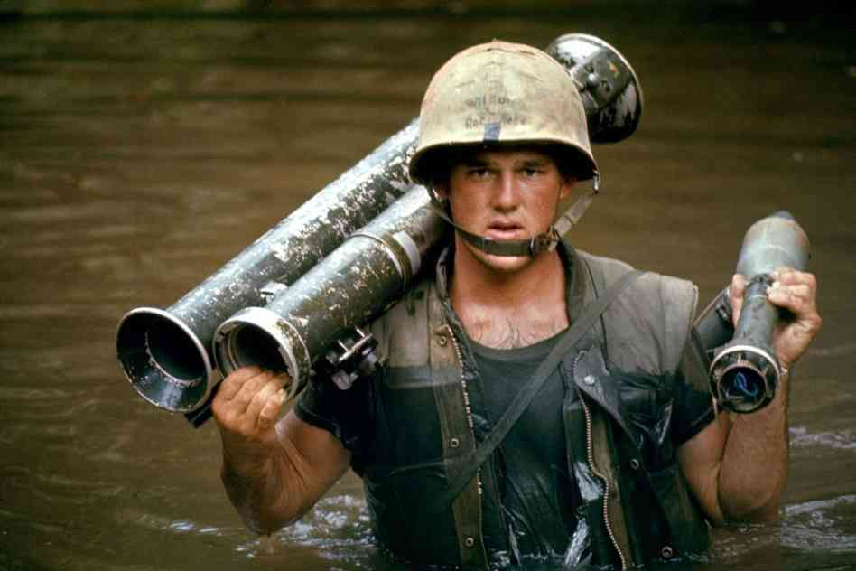
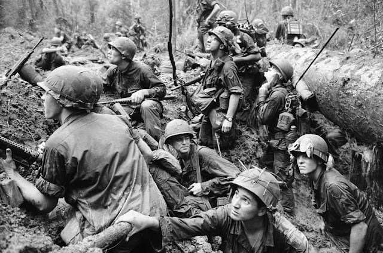

|
Un altro personaggio che attuò le strategie di Sun tzu materialmente fu il generale Giap.
Durante i primi anni della guerra in Vietnam i nord vietnamiti insieme ai Viet-cong sotto
il comando del generale Giap erano riusciti ad vincere qualche battaglia contro gli americani
grazie alla tattica della guerriglia molto utilizzata da Sun tzu. L’esercito nord Vietnamita era
consapevole però del fatto che gli americani erano molto più equipaggiati,
Gli americani infatti erano nettamente più forti ma come diceva Sun tzu in una guerra non si può fare affidamento solo sulla forza,
per questo motivo il generale William Childs Westmoreland comandante in capo delle forze armate americane, non riuscì nonostante
la schiacciante superiorità di mezzi e potenza di fuoco delle truppe,ad ottenere successi decisivi contro le forze nemiche.
Il generale Giap era avvantaggiato inoltre anche dal modo prevedibile di fare guerra degli americani, ma era convinto che la vera debolezza era negli Stati Uniti non in Vietnam, voleva fare in modo che gli americani non supportassero più la guerra il che fu facilitato anche dal fatto che i soldati americani che non volevano stare più in Vietnam. Sfruttando questa situazione nel luglio del 1967 decise di organizzare un importante offensiva impiegando tutte le sue forze. un ruolo molto importante lo hanno giocato le spie che hanno permesso al generale Giap di creare un potente punto di svolta, le spie si trovavano ovunque per le città del Vietnam del sud ed erano soprattutto donne. Fu presa la decisione di sferrare l’offensiva durante il periodo del Tet ovvero il capodanno Vietnamita. considerato un “momento di riposto” per i soldati sottolineato da un ‘cessate in fuoco’ di sette giorni. Per questo motivo si decise per quel giorno in modo che i soldati nord-vietnamiti e i vietcong si potessero mescolare meglio alla massa di gente che avrebbe affollato le città.  Una settimana prima dell’offensiva ci fu un attacco diversivo alla base militare americana di Khe Sanh dove vi erano 6mila marines americani, l’artiglieria nord vietnamita aveva cominciato a bersagliare di tanto in tanto la base, i marines era quasi ininterrottamente impegnati nel fuoco d’interdizione.Fino al giorno dell’offensiva l’esercito nord vietnamita continuò a mantenere sotto pressione la base ciò serviva per permettere al resto delle truppe di infiltrassi nelle città tranquillamente dato che furono richiamanti in difesa della base più di 30mila soldati americani dalle città. I marines riuscirono comunque a resistere grazie al supporto di fuoco dei cacciabombardieri che si accanivano contro le colline attorno alla base, questo supporto aereo fu battezzato da Westmoreland operazione Niagara. L’offensiva colse gli americani di sorpresa, poco prima dell’alba del 30 gennaio gli edifici governativi e le postazioni militari vennero attaccate con mortai, razzi e armi leggere, Westmoreland rispose mettendo le forze americane in allarme rosso. Nella notte fra il 30 e il 31 gennaio in tutte le principali città del Vietnam del sud esplose la violenza. L’ampiezza dell’offensiva era impressionante, oltre 84mila combattenti comunisti erano sbucati fuori apparentemente dal nulla, le città più colpite furono Saigon la capitale e la cittadina di Hué.  All’alba del 31 gennaio la maggior parte della città di Saigon era in mano ai vietcong, i combattimenti erano duri, gli attacchi seguivano tutti lo stesso modello: coperti da una pioggia di bombe da mortaio i guastatori vietcong avanzavano. Sul volto degli americani si poteva vedere lo shock, per due giorni i soldati rimasero consegnati e quando fu richiesto il loro intervento furono animati da uno spirito di vendetta, l’ordine era di radere al suolo l’intera area. In una situazione più critica si trovala la città di Hué dove la presenza americana era minima e ciò permise ai vietcong di occupare tutta la città permettendo alle squadre della morte nord vietnamite, arrivate con delle liste nere, di far fuori quasi 5.000 persone. I combattimenti a Hué furono però diversi dagli altri, i vietcong asserragliati nella città avevano avuto l’ordine di resistere fino all’ultimo, i marines si fecero strada metro per metro facendo fuori i nemici uno ad uno liberando la città solo dopo 26 giorni. Uno degli obiettivi dell’Offensiva del Tet era di provocare un sollevamento popolare capace di causare la caduta del governo sud vietnamita, infatti i vietcong avevano sperato in una insurrezione popolare ma molta gente non stava dalla loro parte soprattutto per la brutalità con cui i comunisti imposero il loro temporaneo controllo. Ai primi di marzo l’offensiva nord vietnamita si poteva considerare conclusa, gli alleati avevano inflitto enormi perdite ai comunisti, ma nonostante la “vittoria” l’offensiva dimostrò come anche dopo tre anni di impegno americano le città del Vietnam del sud potevano essere ancora facilmente attaccate dal nemico. Il generale Giap riuscì con la sua offensiva a smuovere l’opinione pubblica americana che stanca delle numerose perdite incominciava ad opporsi alla guerra. |


©Powered by Samantha Mangeruca